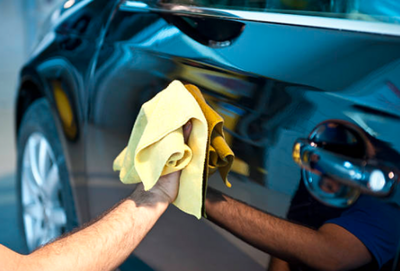
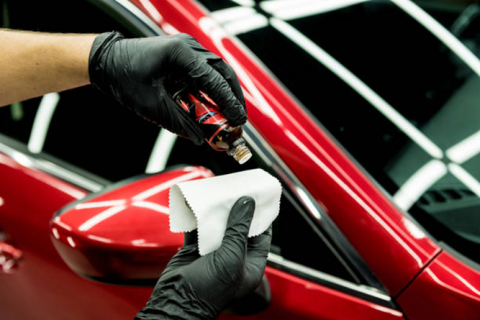

Nossa lavagem detalhada é um serviço completo que vai além da limpeza superficial do seu carro. Utilizamos
técnicas avançadas e produtos de alta qualidade para garantir que cada centímetro do seu veículo seja
cuidadosamente limpo e protegido. Desde a remoção de sujeira e manchas até a aplicação de ceras e selantes,
nossa lavagem detalhada proporciona um acabamento impecável, deixando seu carro brilhando como novo. Confie
em nós para cuidar do seu veículo com atenção aos detalhes e resultados excepcionais.
Limpeza Interna
Nossa limpeza interna é um serviço completo que vai além da simples limpeza do interior do seu carro.
Utilizamos técnicas avançadas e produtos de alta qualidade para garantir que cada centímetro do seu veículo
seja cuidadosamente limpo e protegido. Desde a remoção de sujeira e manchas até a aplicação de produtos
especializados, nossa limpeza interna proporciona um acabamento impecável, deixando seu carro com um
ambiente fresco e higiênico. Confie em nós para cuidar do seu veículo com atenção aos detalhes e resultados
excepcionais.
INCLUIDO NA LAVAGEM DETALHADA
Polimento
O polimento automotivo é um processo técnico que visa restaurar o brilho e remover imperfeições da pintura,
como riscos superficiais e manchas. Através de massas abrasivas e boinas específicas, ele elimina a camada
oxidada, devolvendo o aspecto de carro novo ao veículo. Além da estética, o procedimento prepara a
superfície para receber selantes ou ceras de proteção de longa duração. É uma etapa essencial para quem
deseja valorizar o patrimônio e manter a integridade da lataria contra agentes externos.
R$ xx,xx

Cera
A aplicação de cera automotiva é um processo essencial para proteger a pintura do seu carro e realçar seu
brilho. A cera forma uma camada protetora que ajuda a repelir água, sujeira e outros contaminantes, mantendo
a superfície do veículo mais limpa por mais tempo. Além disso, a cera proporciona um acabamento brilhante e
suave ao toque, realçando a cor e o aspecto geral do carro. É recomendado aplicar cera regularmente para
manter a proteção e o brilho da pintura, especialmente após uma lavagem detalhada ou polimento.
R$ xx,xx
Vitrificaçao de farol
A vitrificação de farol é um serviço especializado que restaura a transparência e o brilho dos faróis do seu
veículo. Utilizamos técnicas avançadas e produtos de alta qualidade para remover manchas, riscos e oxidação
superficiais, devolvendo o aspecto original dos faróis. Este procedimento melhora significativamente a
visibilidade noturna do seu carro, garantindo segurança e estética. Confie em nós para revitalizar os
faróis do seu veículo com resultados impecáveis.
R$ xx,xx

Vitrificação automotiva
A vitrificação automotiva é um processo avançado de proteção da pintura que utiliza uma camada de vidro
líquido para criar uma barreira durável contra arranhões, manchas e danos causados por agentes externos. Esta
tecnologia inovadora proporciona um acabamento brilhante e resistente, mantendo a aparência do seu carro
como nova por muito mais tempo. A vitrificação é ideal para quem busca uma proteção superior e um visual
impecável para o veículo.
R$ xx,xx
Limpeza de banco
A limpeza de banco é um serviço especializado que remove sujeira, manchas e resíduos de dentro do veículo,
garantindo um ambiente interno limpo e higiênico. Utilizamos produtos específicos e técnicas adequadas para
garantir uma limpeza completa, sem danificar os materiais do banco. Este serviço é essencial para manter a
aparência e o conforto do seu carro.